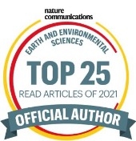

Publications
Google Scholar: h-index = 32, citations = 5593 (February 2026)
Preprints, Conference Papers
- T. Dunstan, O. Strickson, T. Bennett, J. Bowyer, M. Burnand, J. Chappell, A. Coca-Castro, K. I. Dale, E. G. Daub, N. Eftekhari, M. Janmaijaya, J. Lillis, D. Salvador-Jasin, N. Simpson, R. S. Chan, M. Elmasri, L. A. France, S. Madge, L. Bokeria, H. Brown, T. Dodds, A.-L. Ellis, D. Llewellyn-Jones, T. McCaie, S. Moreton, T. Potter, J. Robinson, A. A. Scaife, I. Stenson, D. Walters, K. Bett-Williams, L. Zeeland, P. Yatsyshin, J. S. Hosking, FastNet: Improving the physical consistency of machine-learning weather prediction models through loss function design, arXiv
- R. Rouse, R. Debnath, D. Rouse, W. Tebbutt, B. Dousset, J. S. Hosking, A. McRobie, C. Mora, E. Shuckburgh, Reclassifying Lethal Heat, PREPRINT (Version 1) available at Research Square
Peer-reviewed
- B. R. Evans, A. R. Lowe, A. Crawford, A. Fleming, J. S. Hosking (2026) "Icebergs, jigsaw puzzles, and genealogy: automated multi-generational iceberg tracking and lineage reconstruction", The Cryosphere
Phys.org Heise.de
- G. Muszynski, A. Orr, I. Roy, G. Di Capua, H. D. Pritchard, J. Scott Hosking (2026) "Using a causal effect network approach to quantify the impact of ENSO teleconnections on summer monsoon precipitation over the Himalayas and key regional circulations", Quarterly Journal of the Royal Meteorological Society
- K. Tazi, A. Orr, J. S. Hosking, R. E. Turner (2025) "Precipitation prediction over the upper Indus Basin from large-scale circulation patterns using Gaussian processes", Environmental Data Science
- M. Girona-Mata, A. Orr, M. Widmann, D. Bannister, G. H. Dars, S. Hosking, J. Norris, D. Ocio, T. Phillips, J. Steiner, R. E. Turner (2025) "Probabilistic precipitation downscaling for ungauged mountain sites: a pilot study for the Hindu Kush Himalaya", Hydrology and Earth System Sciences
- E. Bowler, J. Byrne, L.-M. Leclerc, A. Roberto-Charron, M. S. Rogers, R. D. Cavanagh, J. Harasimo, M. L. Lancaster, R. S. Chan, O. Strickson, J. Wilkinson, R. Downie, J. S. Hosking, T. R. Andersson (2025) "AI sea ice forecasts for Arctic conservation: A case study predicting the timing of caribou sea ice migrations", Ecological Solutions and Evidence
Phys.org Anadolu Agency Business Weekly Press Release Canada's National Observer
- R. E. Rouse, H. Moss, S. Hosking, A. McRobie, E. Shuckburgh (2025) "Reflective error: a metric for assessing predictive performance at extreme events", Environmental Data Science
- A. Allen, S. Markou, W. Tebbutt, J. Requeima, W. P. Bruinsma, T. R. Andersson, N. D. Herzog, M. Chantry, J. S. Hosking, R. E. Turner (2025) "End-to-end data-driven weather prediction", Nature
Guardian FT New Scientist Independent Blog
- R. C. Williams, P. Thodoroff, R. J. Arthern, J. Byrne, J. S. Hosking, M. Kaiser, N. D. Lawrence, I. Kazlauskaite (2025) "Calculations of extreme sea level rise scenarios are strongly dependent on ice sheet model resolution", Commun Earth Environ
- R. E. Rouse, D. Khamis, S. Hosking, A. McRobie, E. Shuckburgh (2025) "Streamflow prediction using artificial neural networks and soil moisture proxies", Environmental Data Science
- A. Coca-Castro, A. Fouilloux, R. Barros Lourenço, A. McDonald, Y. Rao, J. S. Hosking (2025) "Improving the reproducibility in geoscientific papers: lessons learned from a Hackathon in climate science", Environmental Data Science
- L. Uebbing, H. L. Joakimsen, L. T. Luppino, I. Martinsen, A. McDonald, K. K. Wickstrøm, S. Lefèvre, A. B. Salberg, S. Hosking, R. Jenssen (2025) "Investigating the Impact of Feature Reduction for Deep Learning-based Seasonal Sea Ice Forecasting", Northern Lights Deep Learning Conference 2025
- R. Parthipan, M. Anand, H. M. Christensen, J. S. Hosking, D. J. Wischik (2024) "Defining error accumulation in ML atmospheric simulators", ArXiv
- K. Tazi, A. Orr, J. Hernandez-González, S. Hosking, R. E. Turner (2024) "Downscaling precipitation over High-mountain Asia using multi-fidelity Gaussian processes: improved estimates from ERA5", Hydrology and Earth System Sciences
- M. S. Rogers, M. Fox, A. Fleming, L. van Zeeland, J. Wilkinson, J. S. Hosking (2024) "Sea ice detection using concurrent multispectral and synthetic aperture radar imagery", Remote Sensing of Environment
- H. L. Joakimsen, I. Martinsen, L. T. Luppino, A. McDonald, S. Hosking, R. Jenssen (2024) "Interrogating Sea Ice Predictability With Gradients", IEEE Geoscience and Remote Sensing Letters
- C. Jay, Y. Yu, I. Crawford, S. Archer-Nicholls, P. James, A. Gledson, G. Shaddick, R. Haines, L. Lannelongue, E. Lines, S. Hosking, D. Topping (2024) "Prioritize environmental sustainability in use of AI and data science methods", Nature Geoscience
- B. Evans, A. Faul, A. Fleming, D. G. Vaughan, J. S. Hosking (2023) "Unsupervised machine learning detection of iceberg populations within sea ice from dual-polarisation SAR imagery", Remote Sensing of Environment
Fox Weather Press Release
- T. R. Andersson, W. P. Bruinsma, S. Markou, J. Requeima, A. Coca-Castro, A. Vaughan, A.-L. Ellis, M. A. Lazzara, D. Jones, S. Hosking, R. E. Turner (2023) "Environmental sensor placement with convolutional Gaussian neural processes", Environmental Data Science
- P. Thodoroff, M. Kaiser, R. Williams, R. Arthern, S. Hosking, N. Lawrence, J. Byrne, I. Kazlauskaite (2023) "Multi-fidelity experimental design for ice-sheet simulation", NeurIPS 2022 Workshop on Gaussian Processes, Spatiotemporal Modeling, and Decision-making Systems
- R. Parthipan, H. M. Christensen, J. S. Hosking, D. J. Wischik (2023) "Using probabilistic machine learning to better model temporal patterns in parameterizations: a case study with the Lorenz 96 model", Geoscientific Model Development
- W. P. Bruinsma, S. Markou, J. Requiema, A. Y. Foong, T. R. Andersson, A. Vaughan, A. Buonomo, J. S. Hosking, R. E. Turner (2023) "Autoregressive Conditional Neural Processes", 11th International Conference on Learning Representations (ICLR 2023)
- T. Summers, E. Mackie, R. Ueno, C. Simpson, J. S. Hosking, T. Suciu, A. Coburn, E. Shuckburgh (2022) "Localized impacts and economic implications from high temperature disruption days under climate change", Climate Resilience and Sustainability
- A. Vaughan, W. Tebbutt, J. S. Hosking, R. E. Turner (2022) "Convolutional conditional neural processes for local climate downscaling", Geoscientific Model Development
- A. Ravuri, T. R. Andersson, I. Kazlauskaite, W. Tebbutt, R. E. Turner, J. S. Hosking, N. D. Lawrence, M. Kaiser (2022) "Ice Core Dating using Probabilistic Programming", NeurIPS 2022 Workshop on Gaussian Processes, Spatiotemporal Modeling, and Decision-making Systems
- V. Lalchand, K. Tazi, T. M. Cheema, R. E. Turner, S. Hosking (2022) "Kernel Learning for Explainable Climate Science", 16th Bayesian Modelling Applications Workshop at UAI, 2022
- C. Simpson, J. S. Hosking, D. Mitchell, R. A. Betts, E. Shuckburgh (2021) "Regional disparities and seasonal differences in climate risk to rice labour", Environmental Research Letters
- N. Eastwood, W. A. Stubbings, M. A. Abou-Elwafa Abdallah, I. Durance, J. Paavola, M. Dallimer, J. H. Pantel, S. Johnson, J. Zhou, J. S. Hosking, J. B. Brown, S. Ullah, S. Krause, D. M. Hannah, S. E. Crawford, M. Widmann, L. Orsini (2021) "The Time Machine framework: monitoring and prediction of biodiversity loss", Trends in Ecology & Evolution
The New Stack
- T. Andersson, J. S. Hosking, M. Pérez-Ortiz, B. Paige, A. Elliott, C. Russell, S. Law, D. C. Jones, J. Wilkinson, T. Phillips, J. Byrne, S. Tietsche, B. B. Sarojini, E. Blanchard-Wrigglesworth, Y. Aksenov, R. Downie, E. Shuckburgh (2021) "Seasonal Arctic sea ice forecasting with probabilistic deep learning", Nature Communications
Nvidia Blog Wired Science News Eos BBC Podcast Mail Online
- M. Amos, U. Sengupta, P. Young, J. S. Hosking (2021) "A continuous vertically resolved ozone dataset from the fusion of chemistry climate models with observations using a Bayesian neural network", EarthArXiv
- J. C. King, J. Turner, S. Colwell, H. Lu, A. Orr, T. Phillips, J. S. Hosking, G. J. Marshall (2021) "Inhomogeneity of the Surface Air Temperature Record from Halley, Antarctica", Journal of Climate
- S. E. Haupt, W. Chapman, S. V. Adams, C. Kirkwood, J. S. Hosking, N. H. Robinson, S. Lerch, A. C. Subramanian (2021) "Towards implementing artificial intelligence post-processing in weather and climate: proposed actions from the Oxford 2019 workshop", Philosophical Transactions of the Royal Society A: Mathematical, Physical and Engineering Sciences
- U. Sengupta, M. Amos, J. S. Hosking, C. E. Rasmussen, M. Juniper, P. J. Young (2020) "Ensembling geophysical models with Bayesian Neural Networks", Advances in Neural Information Processing Systems (NeurIPS) 2020
- W. P. Bruinsma, E. Perim, W. Tebbutt, J. S. Hosking, A. Solin, R. E. Turner (2020) "Scalable Exact Inference in Multi-Output Gaussian Processes", Proceedings of the 37th International Conference on Machine Learning, Vienna, Austria, PMLR 119, 2020
- A. Orr, J. S. Hosking, A. Delon, L. Hoffmann, R. Spang, T. Moffat-Griffin, J. Keeble, N. L. Abraham, P. Braesicke (2020) "Polar stratospheric clouds initiated by mountain waves in a global chemistry--climate model: a missing piece in fully modelling polar stratospheric ozone depletion", Atmospheric Chemistry and Physics
- M. Amos, P. J. Young, J. S. Hosking, J.-F. Lamarque, N. L. Abraham, H. Akiyoshi, A. T. Archibald, S. Bekki, M. Deushi, P. Jöckel, D. Kinnison, O. Kirner, M. Kunze, M. Marchand, D. A. Plummer, D. Saint-Martin, K. Sudo, S. Tilmes, Y. Yamashita (2020) "Projecting ozone hole recovery using an ensemble of chemistry-climate models weighted by model performance and independence", Atmospheric Chemistry and Physics
- T. J. Bracegirdle, C. R. Holmes, J. S. Hosking, G. J. Marshall, M. Osman, M. Patterson, T. Rackow (2020) "Improvements in Circumpolar Southern Hemisphere Extratropical Atmospheric Circulation in CMIP6 Compared to CMIP5", Earth and Space Science
- M. R. McCrystall, J. S. Hosking, I. P. White, A. C. Maycock (2020) "The impact of changes in tropical sea surface temperatures over 1979-2012 on Northern hemisphere high latitude climate", Journal of Climate
- L. Kapetas, N. Kazakis, K. Voudouris, A. T. Martinez, J. S. Hosking (2019) "Modelling Groundwater - Surface Water Interactions Under Climate Change Scenarios: insights from Axios Delta, Greece", ICONHIC 2019: 2nd International Conference on Natural Hazards & Infrastructure, Chania, Greece
- D. Bannister, A. Orr, S. K. Jain, I. P. Holman, A. Momblanch, T. Phillips, A. J. Adeloye, B. Snapir, T. W. Waine, J. S. Hosking, C. Allen-Sader (2019) "Bias correction of high-resolution regional climate model precipitation output gives the best estimates of precipitation in Himalayan catchments", Journal of Geophysical Research: Atmospheres
- J. Turner, T. Phillips, M. Thamban, W. Rahaman, G. J. Marshall, J. D. Wille, V. Favier, V. H. Winton, E. Thomas, Z. Wang, M. Broeke, J. S. Hosking, T. Lachlan-Cope (2019) "The Dominant Role of Extreme Precipitation Events in Antarctic Snowfall Variability", Geophysical Research Letters
Phys.org
- P. Deb, A. Orr, D. H. Bromwich, J. P. Nicolas, J. Turner, J. S. Hosking (2018) "Summer Drivers of Atmospheric Variability Affecting Ice Shelf Thinning in the Amundsen Sea Embayment, West Antarctica", Geophysical Research Letters
- J. S. Hosking, D. MacLeod, T. Phillips, C. R. Holmes, P. Watson, E. Shuckburgh, D. Mitchell (2018) "Changes in European wind energy generation potential within a 1.5C warmer world", Environmental Research Letters
Carbon Brief Independent Phys.org Mail Online Treehugger
- J. C. King, D. Bannister, J. S. Hosking, S. R. Colwell (2017) "Causes of the Antarctic region record high temperature at Signy Island, 30th January 1982", Atmospheric Science Letters
- J. S. Hosking, R. Fogt, E. R. Thomas, V. Moosavi, T. Phillips, J. Coggins, D. Reusch (2017) "Accumulation in coastal West Antarctic ice core records and the role of cyclone activity", Geophysical Research Letters
- D. Bannister, M. Herzog, H.-F. Graf, J. S. Hosking, C. A. Short (2017) "An Assessment of Recent and Future Temperature Change over the Sichuan Basin, China, Using CMIP5 Climate Models", Journal of Climate
- J. Turner, T. Phillips, G. J. Marshall, J. S. Hosking, J. O. Pope, T. J. Bracegirdle, P. Deb (2017) "Unprecedented springtime retreat of Antarctic sea ice in 2016", Geophysical Research Letters
Phys.org
- T. Moffat-Griffin, M. J. Taylor, T. Nakamura, A. J. Kavanagh, J. S. Hosking, A. Orr (2017) "3rd ANtarctic Gravity Wave Instrument Network (ANGWIN) science workshop", Advances in Atmospheric Sciences
- J. Turner, J. S. Hosking, T. J. Bracegirdle, T. Phillips, G. J. Marshall (2017) "Variability and trends in the Southern Hemisphere high latitude, quasi-stationary planetary waves", International Journal of Climatology
- J. Turner, H. Lu, I. White, J. King, T. Phillips, J. S. Hosking, T. J. Bracegirdle, G. J. Marshall, R. Mulvaney, P. Deb (2016) "Absence of 21st century warming on Antarctic Peninsula consistent with natural variability", Nature
Carbon Brief Washington Post
- P. Deb, A. Orr, J. S. Hosking, T. Phillips, J. Turner, D. Bannister, J. O. Pope, S. Colwell (2016) "An assessment of the Polar Weather Research and Forecasting (WRF) model representation of near-surface meteorological variables over West Antarctica", Journal of Geophysical Research: Atmospheres
- J. S. Hosking, A. Orr, T. J. Bracegirdle, J. Turner (2016) "Future circulation changes off West Antarctica: Sensitivity of the Amundsen Sea Low to projected anthropogenic forcing", Geophysical Research Letters
- M. N. Raphael, G. J. Marshall, J. Turner, R. L. Fogt, D. Schneider, D. A. Dixon, J. S. Hosking, J. M. Jones, W. R. Hobbs (2016) "The Amundsen Sea Low: Variability, Change, and Impact on Antarctic Climate", Bulletin of the American Meteorological Society
- J. Turner, J. S. Hosking, G. J. Marshall, T. Phillips, T. J. Bracegirdle (2016) "Antarctic sea ice increase dominated by intrinsic variability of the Amundsen Sea Low", Climate Dynamics
- E. R. Thomas, J. S. Hosking, R. R. Tuckwell, R. A. Warren, E. C. Ludlow (2015) "Twentieth century increase in snowfall in coastal West Antarctica", Geophysical Research Letters
Indian Express
- J. Turner, J. S. Hosking, T. J. Bracegirdle, G. J. Marshall, T. Phillips (2015) "Recent Changes in Antarctic Sea Ice", Philosophical Transactions of the Royal Society of London A: Mathematical, Physical and Engineering Sciences
- C. Chemel, M. R. Russo, J. S. Hosking, P. J. Telford, J. A. Pyle (2015) "Sensitivity of tropical deep convection in global models: effects of horizontal resolution, surface constraints and 3D atmospheric nudging", Atmospheric Science Letters
- A. Orr, J. S. Hosking, L. Hoffmann, J. Keeble, S. M. Dean, H. K. Roscoe, N. L. Abraham, S. Vosper, P. Braesicke (2015) "Inclusion of mountain-wave-induced cooling for the formation of PSCs over the Antarctic Peninsula in a chemistry-climate model", Atmospheric Chemistry and Physics
- J. S. Hosking, D. Bannister, A. Orr, J. King, E. Young, T. Phillips (2015) "Orographic disturbances of surface winds over the shelf waters adjacent to South Georgia", Atmospheric Science Letters
- A. Orr, T. Phillips, S. Webster, A. Elvidge, M. Weeks, S. Hosking, J. Turner (2014) "Met Office Unified Model high resolution simulations of a strong wind event in Antarctica", Quarterly Journal of the Royal Meteorological Society
- T. Bracegirdle, J. Turner, J. S. Hosking, T. Phillips (2014) "Sources of uncertainty in projections of twenty-first century westerly wind changes over the Amundsen Sea, West Antarctica, in CMIP5 climate models", Climate Dynamics
- J. Turner, J. S. Hosking, T. Phillips, G. J. Marshall (2013) "Temporal and spatial evolution of the Antarctic sea ice prior to the September 2012 record maximum extent", Geophysical Research Letters
- J. S. Hosking, A. Orr, G. J. Marshall, J. Turner, T. Phillips (2013) "The influence of the Amundsen-Bellingshausen Seas Low on the climate of West Antarctica and its representation in coupled climate model simulations", Journal of Climate
- J. Turner, T. Phillips, J. S. Hosking, G. J. Marshall, A. Orr (2013) "The Amundsen Sea Low", International Journal of Climatology
- N. E. Barrand, D. Vaughan, N. Steiner, M. Tedesco, P. Kuipers Munneke, M. Broeke, J. S. Hosking (2013) "Trends in Antarctic Peninsula surface melting conditions from observations and regional climate modelling", Journal of Geophysical Research: Earth Surface
- J. Turner, T. Bracegirdle, T. Phillips, G. J. Marshall, J. S. Hosking (2013) "An Initial Assessment of Antarctic Sea Ice Extent in the CMIP5 Models", Journal of Climate
- A. Orr, T. J. Bracegirdle, J. S. Hosking, W. Feng, H. K. Roscoe, J. D. Haigh (2013) "Strong dynamical modulation of the cooling of the polar stratosphere associated with the Antarctic ozone hole", Journal of Climate
- A. Orr, T. J. Bracegirdle, J. S. Hosking, T. Jung, J. D. Haigh, T. Phillips, W. Feng (2012) "Possible Dynamical Mechanisms for Southern Hemisphere Climate Change due to the Ozone Hole", Journal of the Atmospheric Sciences
- J. S. Hosking, M. R. Russo, P. Braesicke, J. A. Pyle (2012) "Tropical convective transport and the Walker circulation", Atmospheric Chemistry and Physics
- C. R. Hoyle, V. Marécal, M. R. Russo, G. Allen, J. Arteta, C. Chemel, M. P. Chipperfield, F. D'Amato, O. Dessens, W. Feng, J. F. Hamilton, N. R. Harris, J. S. Hosking, A. C. Lewis, O. Morgenstern, T. Peter, J. A. Pyle, T. Reddmann, N. A. Richards, P. J. Telford, W. Tian, S. Viciani, A. Volz-Thomas, O. Wild, X. Yang, G. Zeng (2011) "Representation of tropical deep convection in atmospheric models - Part 2: Tracer transport", Atmospheric Chemistry and Physics
- M. R. Russo, V. Marécal, C. R. Hoyle, J. Arteta, C. Chemel, M. P. Chipperfield, O. Dessens, W. Feng, J. S. Hosking, P. J. Telford, O. Wild, X. Yang, J. A. Pyle (2011) "Representation of tropical deep convection in atmospheric models - Part 1: Meteorology and comparison with satellite observations", Atmospheric Chemistry and Physics
- J. S. Hosking, M. R. Russo, P. Braesicke, J. A. Pyle (2010) "Modelling deep convection and its impacts on the tropical tropopause layer", Atmospheric Chemistry and Physics
Reports
- E. G. Daub, T. Dunstan, T. Bennett, M. Burnand, J. Chappell, A. Coca-Castro, N. Eftekhari, J. S. Hosking, M. Janmaijaya, J. Lillis, D. Salvador-Jasin, N. Simpson, O. T. Strickson, R. S. Chan, M. Elmasri, L. A. France, S. Madge, J. Robinson, A. A. Scaife, D. Walters, P. Yatsyshin, T. McCaie, L. Bokeria, H. Brown, T. Dodds, D. Llewellyn-Jones, S. Moreton, T. Potter, I. Stenson, L. Zeeland, K. Bett-Williams, K. I. Dale (2025) "Technical overview and architecture of the FastNet Machine Learning weather prediction model, version 1.0", The Alan Turing Institute, Met Office
- A. Conner, S. Hosking, J. Lloyd, A. Rao, G. Shaddick, M. Sharan (2023) "Tackling climate change with data science and AI", The Alan Turing Institute
- D. J. Patterson et al. (2020) "Spatial Finance: Challenges and Opportunities in a Changing World", WWF and World Bank Group
- E. Wolff et al. (2018) "Geoengineering", Global Environmental Research Committee (GERC), Royal Society
- E. Wolff et al. (2017) "Air quality", Global Environmental Research Committee (GERC), Royal Society
- E. Wolff et al. (2017) "Biodiversity", Global Environmental Research Committee (GERC), Royal Society
- E. Wolff et al. (2016) "Natural Resources", Global Environmental Research Committee (GERC), Royal Society
- E. Wolff et al. (2016) "Climate", Global Environmental Research Committee (GERC), Royal Society
- A. Maycock, S. Hosking, T. Bracegirdle (2013) "Key Points from the IPCC WGI Fifth Assessment Report. Climate Change 2013: The Physical Science Basis", Cambridge Centre for Climate Science (CCfCS)
PhD Thesis
Datasets
